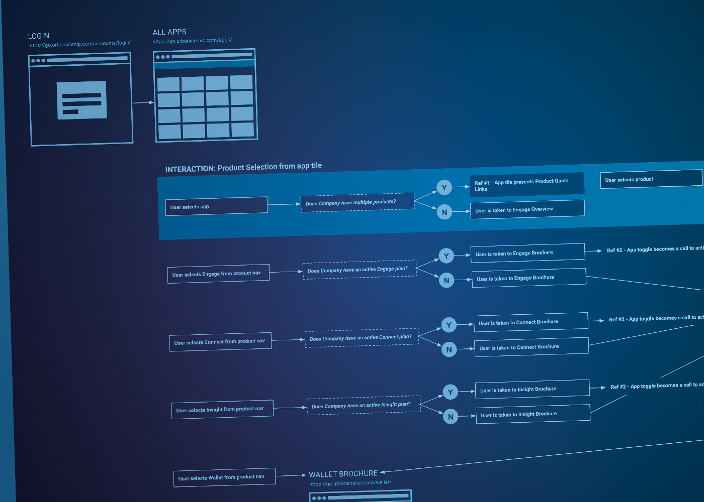
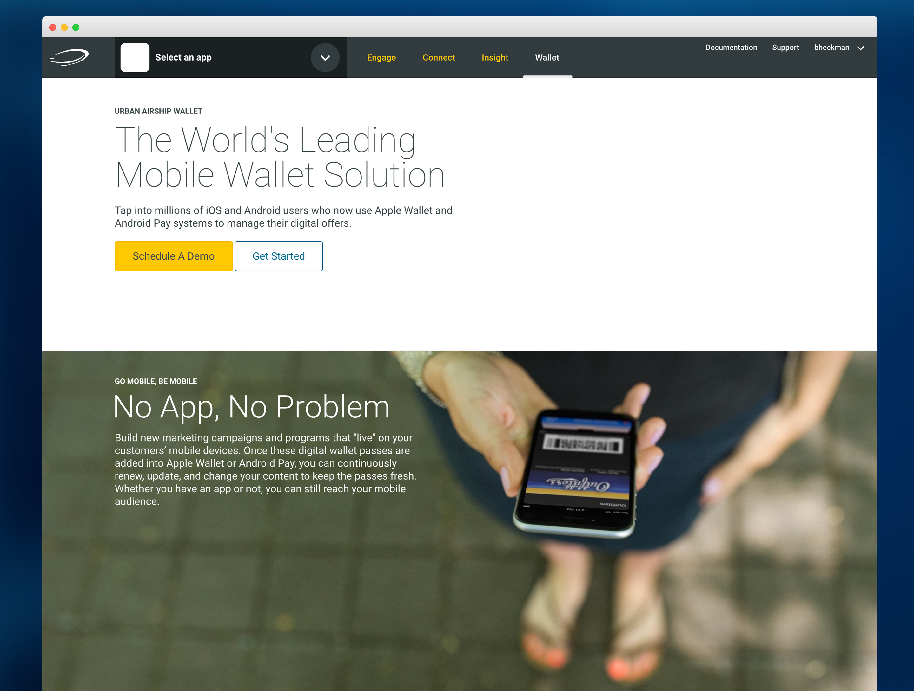
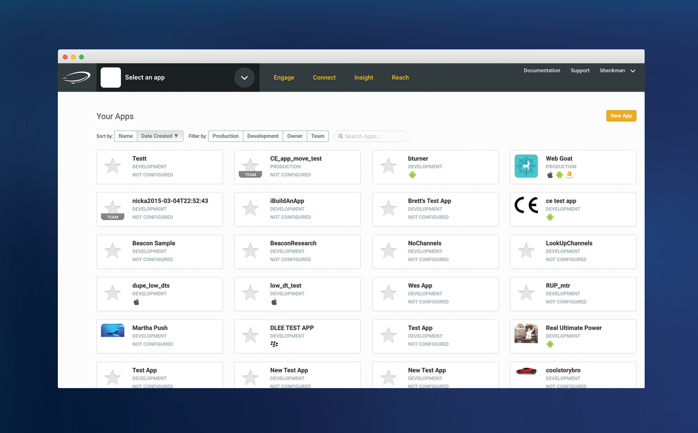
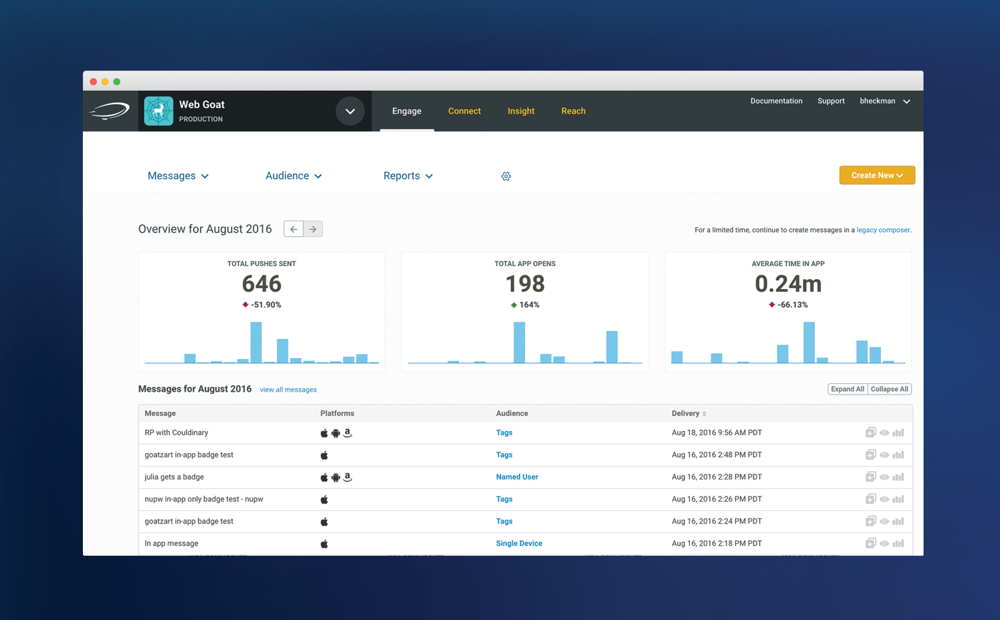
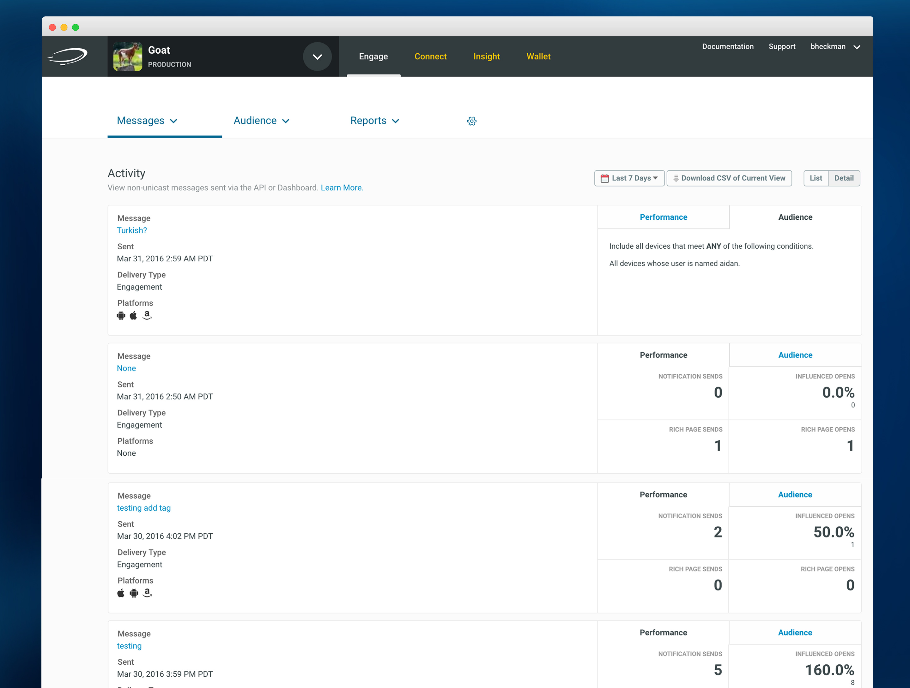
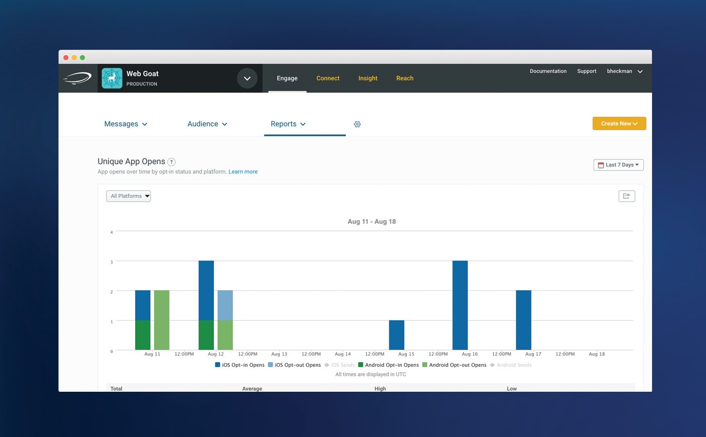

Mapping User Flows






Transforming into a multi-horizon company.
Urban Airship had one product when I joined the company. It now has three product lines and four products between them.
The product had been built with an app-centric, single product mindset. Breaking this mold required a reimagining of the information architecture and user flows.